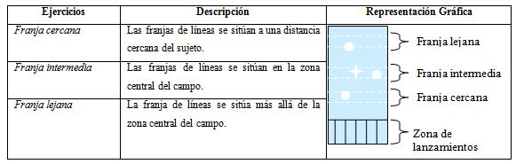
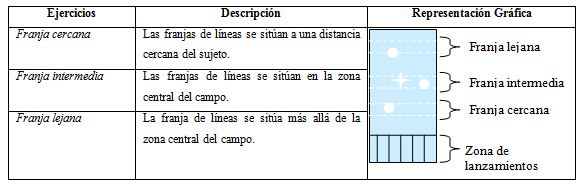

La magia de la Boccia
Categorias
Deportistas que tienen parálisis cerebral y juegan con la mano o con el pie ,que evidencian problemas a la hora de coger y lanzar la bola , con dificultades en la coordinación general y la fuerza de lanzamiento. Pueden ser asistidos por un auxiliar, que sólo puede realizar los actos que le indica la persona que está compitiendo.
Deportistas con parálisis cerebral que juegan con la mano, aunque con menos dificultades motrices que los deportistas BC1. No pueden ser asistidos por ningún auxiliar.
Deportistas con severa disfunción locomotriz en las cuatro extremidades (con o sin parálisis cerebral), con dificultades para sostener, agarrar o lanzar la bola. Recurren a un auxiliar, que se mantiene de espaldas al juego y sólo puede realizar los actos que le indica la persona que está compitiendo. Utilizan una canaleta o rampa para el lanzamiento de la boccia. Deportistas con severa disfunción locomotriz en las cuatro extremidades (con o sin parálisis cerebral), con dificultades para sostener, agarrar o lanzar la bola. Recurren a un auxiliar, que se mantiene de espaldas al juego y sólo puede realizar los actos que le indica la persona que está compitiendo. Utilizan una canaleta o rampa para el lanzamiento de la boccia.
Deportistas con significativa inhabilidad física, que no sea parálisis cerebral, que evidencian dificultades para arrojar la boccia, pero lanzan con la mano o con el pie, debiendo escoger con qué extremidades lo hará. Si lanzan con la mano no pueden recibir asistencia de un auxiliar. Si lanzan con el pie pueden ser asistidos por un auxiliar, que sólo puede ejecutar los actos que la persona que practica el deporte le indique.


 



© Página realizada por A.J.B.C en 2018.